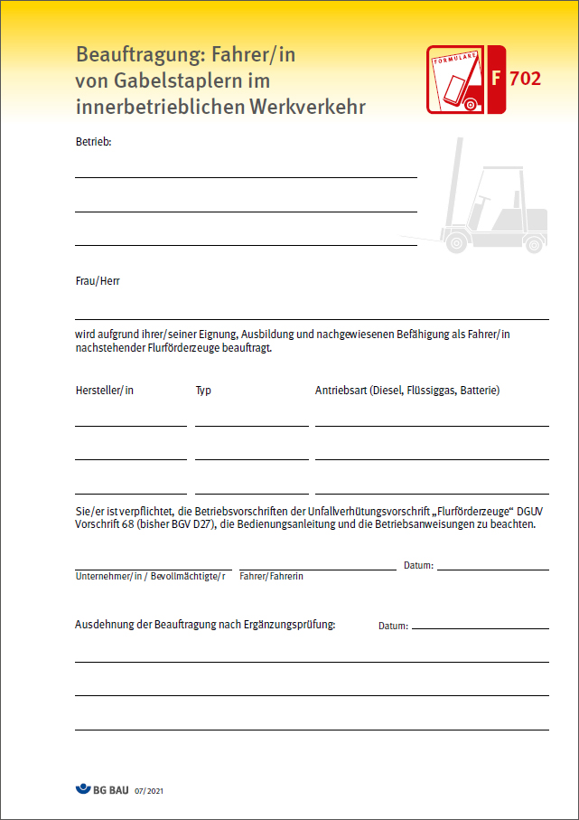

| DIN 1054:2010-12 | Baugrund – Sicherheitsnachweise im Erd- und Grundbau – Ergänzende Regelungen zu DIN EN 1997-1 |
| DIN EN 1610:2015-12 | Einbau und Prüfung von Abwasserleitungen und -kanälen |
| DIN EN 1914:2016-12 | Fahrzeuge der Binnenschifffahrt – Arbeits-, Bei- und Rettungsboote |
| DIN EN 1997-1:2014-03 | Eurocode 7 – Entwurf, Berechnung und Bemessung in der Geotechnik – Teil 1: Allgemeine Regeln |
| DIN 4123:2013-04 | Ausschachtungen, Gründungen und Unterfangungen im Bereich bestehender Gebäude |
| DIN 4124:2012-01 | Baugruben und Gräben – Böschungen, Verbau, Arbeitsraumbreiten |
| DIN EN ISO 9612:2009-09 | Akustik – Bestimmung der Lärmexposition am Arbeitsplatz – Verfahren der Genauigkeitsklasse 2 |
| DIN EN 12021:2014-07 | Atemgeräte – Druckgase für Atemschutzgeräte |
| DIN EN 12110:2014-10 | Tunnelbaumaschinen – Druckluftschleusen – Sicherheitstechnische Anforderungen |
| DIN EN ISO 12402-2:2006-12 | Persönliche Auftriebsmittel, Teil 2 Rettungswesten, Stufe 275, Sicherheitstechnische Anforderungen |
| DIN EN ISO 12402-3:2006-12 | Persönliche Auftriebsmittel, Teil 3 Rettungswesten, Stufe 150, Sicherheitstechnische Anforderungen |
| DIN 13157:2009-11 | Erste-Hilfe-Material – Verbandkasten C |
| DIN 13169:2009-11 | Erste-Hilfe-Material – Verbandkasten E |
| DIN EN 13331-1:2002-11 | Grabenverbaugeräte – Teil 1: Produktfestlegungen |
| DIN EN 14225-1:2018-03 | Tauchanzüge – Teil 1: Nasstauchanzüge – Anforderungen und Prüfverfahren |
| DIN EN 14225-2:2018-03 | Tauchanzüge – Teil 2: Trockentauchanzüge – Anforderungen und Prüfverfahren |
| DIN EN 14225-3:2018-03 | Tauchanzüge – Teil 3: Aktiv beheizte oder gekühlte Anzugsysteme und Anzugteile – Anforderungen und Prüfverfahren |
| DIN EN 15333-1:2008-04 | Atemgeräte – Schlauchversorgte Leichttauchgeräte mit Druckgas – Teil 1: Lungenautomatisch gesteuerte Geräte |
| DIN EN 15333-2:2009-07 | Atemgeräte – Schlauchversorgte Leichttauchgeräte mit Druckgas – Teil 2: Geräte mit konstantem Volumenstrom |
| DIN EN 16191:2014-09 | Tunnelbaumaschinen – Sicherheitstechnische Anforderungen |
| ATV DIN 18323:2016-09 | VOB Vergabe- und Vertragsordnung für Bauleistungen – Teil C: Allgemeine Technische Vertragsbedingungen für Bauleistungen (ATV) – Kampfmittelräumarbeiten |